CS184 Summer 2025 Homework 3 Write-Up
Link to webpage: cal-cs184.github.io/hw-webpages-su25-yllivct/hw3
Link to GitHub repository: github.com/cal-cs184/hw-pathtracer-114514hw3
Overview
In this assignment, I implemented a physically based ray tracer. It first constructs BVH for models, then generates rays, intersects with figures and gets the global illumination. In this way, it enables rendering of photorealistic scenes with only diffuse reflection surfaces.
Part 1: Ray Generation and Scene Intersection
In this part of the assignment, I implemented ray generation and scene intersection logic to support basic ray tracing functionality. It starts by generating rays from the camera into the scene. For each pixel in the image, ns_aa rays are randomly constructed in camera space and transformed into world space using the camera-to-world transformation. Each ray is then tested for intersection against all geometric primitives in the scene.
In my Triangle::intersect() function: First, I calculate the surface normal n of the triangle plane using the cross product n = cross(p3-p1, p2-p1). If dot(r.d,n)==0, they won't intersect; if not, \( t = \frac{(p_1 - \mathbf{o}) \cdot \mathbf{n}}{\mathbf{d} \cdot \mathbf{n}} \). If t lies in the range [min_t,max_t), I then calculate the Barycentric Coordinates(same as the function in hw1). If a,b,c all lie in [0,1], the ray will intersect the triangle, so I set max_t to t and use a,b,c,n1,n2,n3 to get the surface normal isect->n.

|

|
Part 2: Bounding Volume Hierarchy
Recap the BVH Construction Algorithm
Overall pipeline
For the range [start, end) compute a bounding box that encloses every primitive and store it in node->bb. If the number of primitives in the range is less than or equal to max_leaf_size, declare this node a leaf, record the start and end iterators, and stop. Build a second AABB that encloses the centroids of all primitives. Select the dimension (x, y, or z) along which this centroid box has the greatest extent; that axis will be used for splitting. Gather the centroids’ coordinates along the chosen axis and take their arithmetic mean. This mean value acts as a plane that divides space into “left” (centroid < mean) and “right” (centroid ≥ mean). Rearrange the pointers in the [start, end) range so that everything whose centroid lies on the left of the split plane precedes those on the right. Record the iterator returned by the partition operation as mid. If the partition put every primitive on one side—meaning mid equals start or end—fall back to a simple 50/50 split by element count: mid = start + (count / 2). Create the node’s left child from the range [start, mid) and its right child from [mid, end) by repeating steps 1 through 6 for each side.
Heuristic Choice
- Longest-axis minimizes box overlap in expectation.
- Mean-centroid split is O(n) (no sort).
- Fallback 50 / 50 split prevents infinitely deep skewed trees on near-coplanar data.
.dae files with BVH acceleration
| 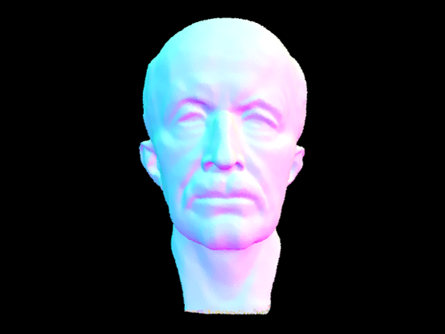 | 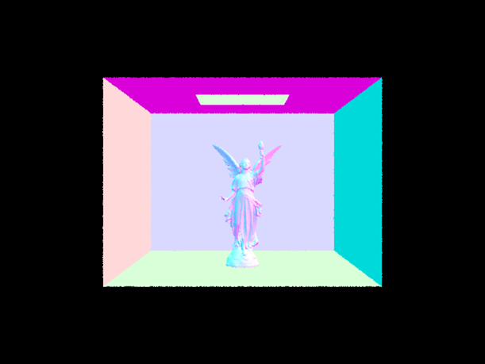 |
BVH acceleration reduces ray–primitive testing from linear to logarithmic complexity. Combined with nearest-first DFS and ray.max_t early-exit, render times improve by 400x. Dense, spatially balanced meshes profit the most, whereas the simpler cow gains less because only a few BVH levels can be pruned. The mean-centroid heuristic offers this speed-up with negligible build cost and robustly avoids degenerate trees.
Part 3: Direct Illumination
Implementations of the direct lighting function
Uniform Hemisphere Sampling
In estimate_direct_lighting_hemisphere, I generate N directions wi on the unit hemisphere using hemisphereSampler->get_sample(), transform them to world space with o2w, then cast shadow rays from hit_p + EPS_F * wi. For each sample that hits a light, accumulate\(\frac{f_r(p,\omega_i\rightarrow\omega_o)L_i(p,\omega_i)\cos\theta_i}{p(\omega_i)}\) and finally divide by N. The PDF is constant \( p(\omega_i)=\frac{1}{2\pi} \) because of uniform sampling.
Importance Sampling Lights
estimate_direct_lighting_importance iterates over scene->lights. For each light I call light->sample_L(p, &wi, &distToLight, &pdf). If the shadow ray is unoccluded, add \( \frac{f_rL_i\cos\theta_i}{pdf} \) to the outgoing radiance. Point lights are treated as delta lights; hence I sample them once to avoid redundant rays.
|
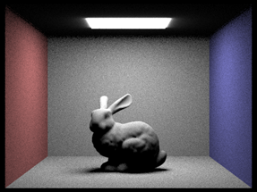
|
|
|
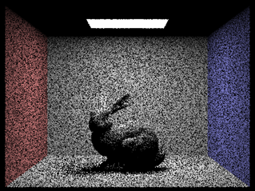
|
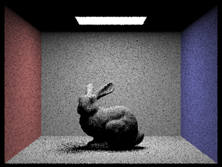
|
|
|

|
Comparison
In my implementation, uniform-hemisphere sampling (UH) and light-importance sampling (LS) both estimate direct lighting with the Monte-Carlo reflection equation, yet they allocate paths very differently. UH draws directions with a constant PDF = \(\frac{1}{2\pi}\), so the vast majority of rays never reach an emitter; the estimator therefore has high variance and produces visibly speckled penumbrae even when the per-pixel sample count is moderate. By contrast, LS samples each light with sample_L, drawing directions proportional to the light’s emitted radiance and geometry. Every accepted ray is guaranteed to hit an actual light source, so energy is concentrated where Li>0. As a result, with the same total ray budget (e.g., one pixel sample, four light rays) LS already yields smooth soft shadows and clean walls, while UH still exhibits high-frequency noise. Increasing the -l flag from 1 to 64 in LS reduces noise roughly with the expected \(\frac{1}{\sqrt{n}}\) rate, whereas UH requires orders-of-magnitude more samples (or additional bounces) to achieve comparable convergence. In short, light-importance sampling dramatically increases efficiency by matching the sampling PDF to the integrand, making it the preferred strategy whenever explicit light information is available.
Part 4: Global Illumination
My implementation of the indirect lighting function
First I initialize r.depth to max_ray_depth in raytrace_pixel. Then I implement est_radiance_global_illumination: the output should include zero_bounce_radiance if isAccumBounces is true or r.depth==0, and should include at_least_one_bounce_radiance if r.depth>0. Then I implement at_least_one_bounce_radiance. It first calls the one_bounce_radiance function. If r.depth>1, it then samples a new ray from the intersect point with new_ray.depth=r.depth-1 and calls itself to calculate higher bounces.
At first, I forgot to remove the -H flag, which cost me hours to figure out because I kept checking the functions over and over.
Images rendered with global illumination
|
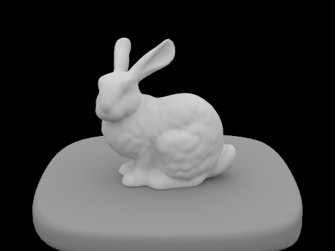
|
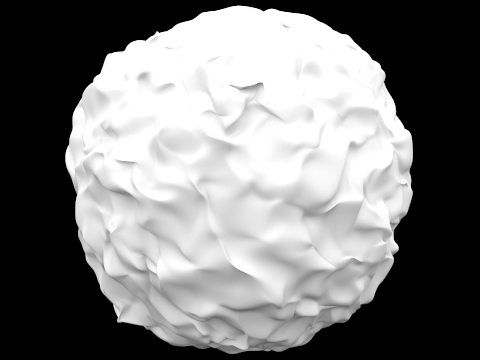
|
Comparison between direct illumination and indirect illumination
|
|
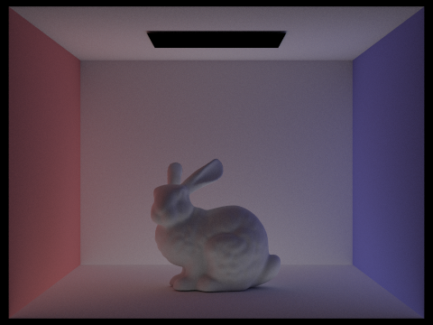
|
The m-th bounce of light
| max_ray_depth | Unaccumulated | Accumulated |
|---|---|---|
| m = 0 | 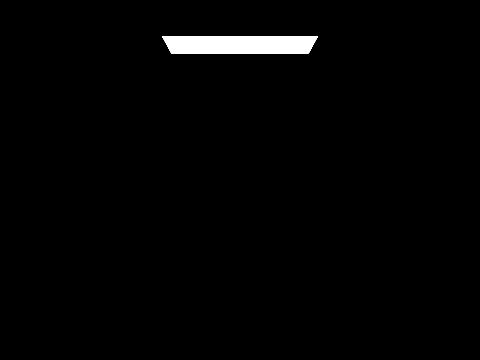 |
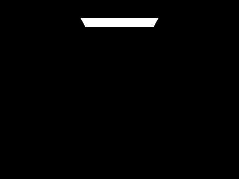 |
| m = 1 | 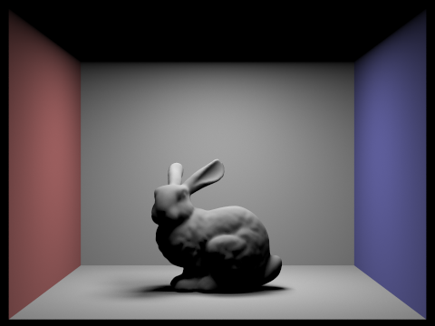 |
|
| m = 2 | 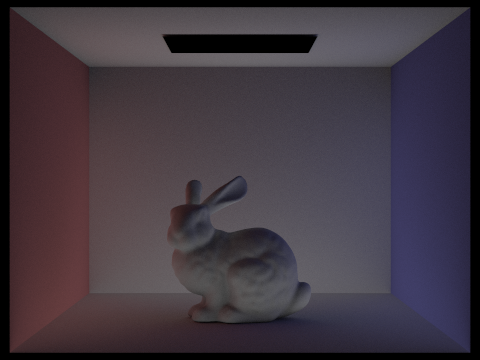 |
 |
| m = 3 | 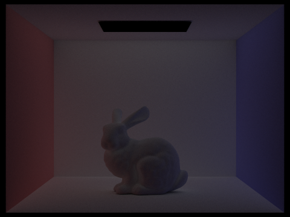 |
|
| m = 4 | 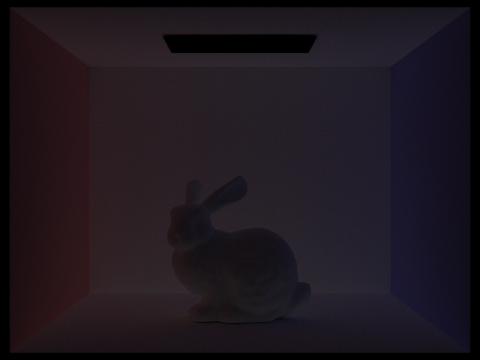 |
|
| m = 5 | 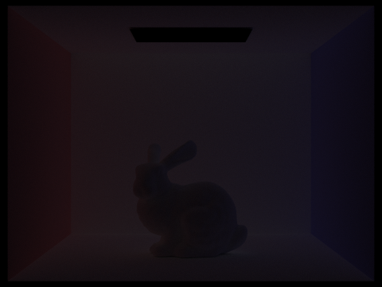 |
Analysis of 2nd and 3rd Bounce Contributions
The 2nd and 3rd bounce includes lights to surfaces that are not in the direct line of sight from light sources, like the ceiling. They add soft illumination to shadowed regions, therefore reduce harsh shadows and make the image more realistic.
Russian Roulette(p=0.55)
|
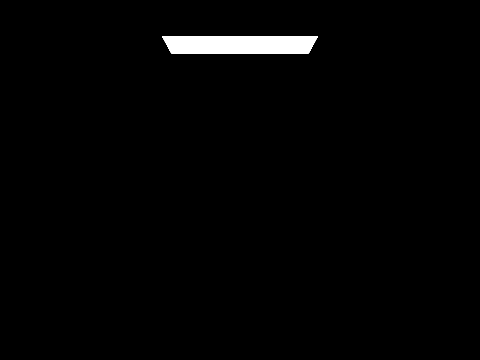
|
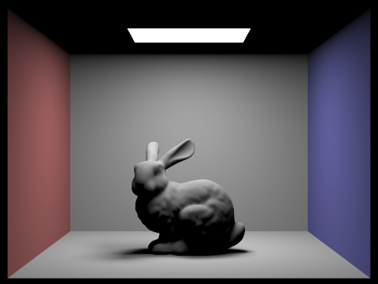
|
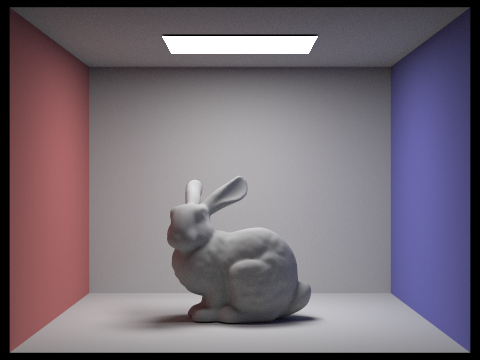
|
|
|
|
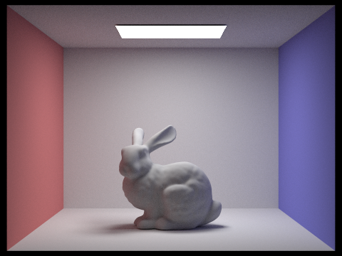
|
Images with different sample-per-pixel rates
|
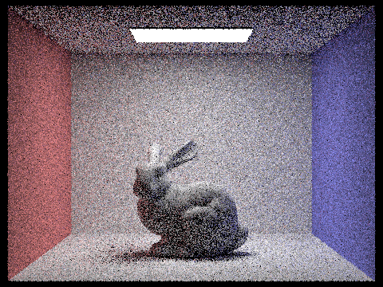
|
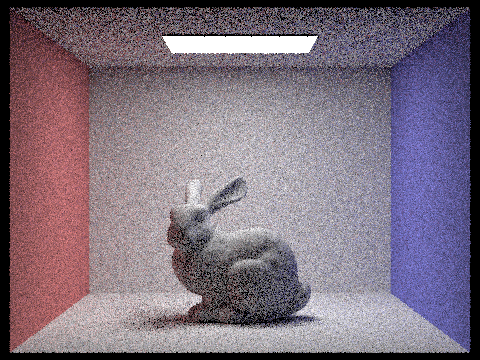
|
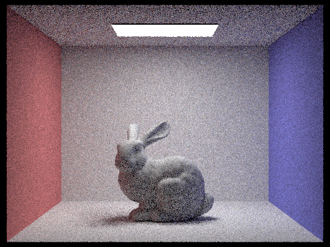
|
|
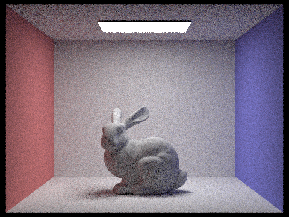
|
|
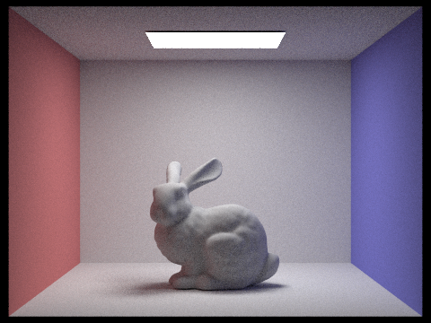
|
|
|
Part 5: Adaptive Sampling
Adaptive Sampling Explanation
Adaptive sampling is a technique used in Monte Carlo path tracing to reduce noise efficiently while minimizing unnecessary computation. In traditional path tracing, a fixed number of samples is taken for every pixel, regardless of how quickly the pixel’s color stabilizes. However, some pixels converge to their true value with very few samples, while others—especially those in complex lighting regions—require many more samples to reduce noise. Applying the same sampling rate to all pixels wastes computational resources. Adaptive sampling addresses this by monitoring the convergence of each pixel individually and stopping sampling early for pixels that have already stabilized. This allows the renderer to allocate more computation to difficult pixels and less to simple ones, improving rendering efficiency.
For each pixel, we estimate its mean luminance \( \mu \) and standard deviation \( \sigma \) from the samples collected so far. We define the convergence measure:
\[ I = 1.96 \cdot \frac{\sigma}{\sqrt{n}} \]
where:
- n is the number of samples so far
- 1.96 corresponds to the 95% confidence interval in statistics
If I is small, it means the variance of the pixel is low or the number of samples is high, so the pixel is likely to have converged. We compare I to a tolerance threshold.
The adaptive sampling implementation begins by setting the maximum number of samples allowed for a pixel, the batch size for convergence checks, and the tolerance threshold for determining convergence. Two running statistics are maintained for each pixel:
- the sum of luminance values from all samples taken so far
- the sum of their squares
These two quantities allow us to calculate the mean and variance of the pixel’s luminance at any time without storing every individual sample.
The renderer proceeds by taking samples in batches rather than checking for convergence after every single sample. This reduces the computational cost of statistical evaluation. For each batch, a number of rays are generated from slightly jittered positions within the pixel to ensure stochastic sampling. Each ray is traced through the scene to compute its contribution to the pixel’s color, and the resulting radiance is accumulated into both the RGB sum (for final color output) and the luminance statistics (for convergence testing).
After each batch of samples, the mean and standard deviation of the luminance are computed. These values are used to estimate the 95% confidence interval for the pixel’s luminance. If the half‑width of this interval is below the specified tolerance threshold relative to the mean luminance, the pixel is considered converged and no further sampling is performed. Otherwise, the process repeats until either the pixel converges or the maximum number of samples is reached.
Once sampling finishes for a pixel, the final RGB color is computed by averaging the accumulated radiance over the number of samples actually taken. The number of samples used is also recorded, enabling the generation of a sampling‑rate visualization that shows how many samples were required for different regions of the image.
| 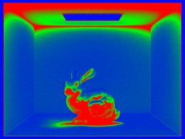 | |
| 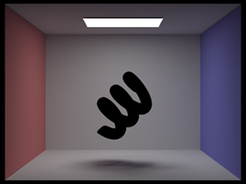 | 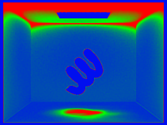 |
| 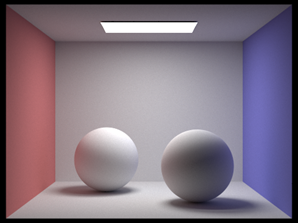 | 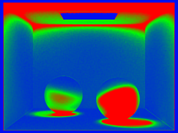 |
Task Allocation
For this homework, I worked with my partner. I (Songyan Li) worked on part 1,4 and he (Yihong Zhai) worked on part 2,3,5. He also helped me a lot in debugging.
Acknowledgement of AI
We used ChatGPT in this homework. We mainly used it for understanding the concepts & requirements and debugging. It was also used to turn the write-up into html.